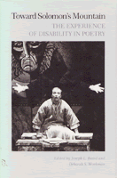

<body bgcolor="#FFFFFF" text="#000000" link="#0000FF" vlink="#CC0000" alink="#CC0000"><center><hr width="350" size="1" align="center" noshade>A unique anthology on the experience of disability<hr width="350" size="1" align="center" noshade><p><a href="https://cdcshoppingcart.uchicago.edu/Cart/ChicagoBook.aspx?ISBN=9780877224167&&PRESS=temple" target="_top">Buy this book!</a> | <a href="https://cdcshoppingcart.uchicago.edu/Cart/Cart.aspx?PRESS=temple" target="_top">View Cart</a> | <a href="https://cdcshoppingcart.uchicago.edu/Cart/Cart.aspx?PRESS=temple" target="_top">Check Out</a></p><p></p></center><!--none//--><h1>Toward Solomon's Mountain</h1>
<H2>The Experience of Disability in Poetry</H2>
<h3>edited by Joseph L. Baird and Deborah S. Workman</h3>
<P>cloth 0-87722-416-1 $19.95, May 86, <FONT COLOR=#990033>Out of Print</FONT>
<BR> 160 pp
</P><p><I>If my legs cannot move
<br>I will wriggle my toes
<br>Till they learn
<br>to do intricate dances</I>
<br>&#151The Hoofer
<br>Lillian Morrison
<p>Serious, tough-minded, non-sentimental poems on the experience of disability are collected here for the first time. This unique anthology shows with profound objectivity the human experiences shared by people with disabilities which cause them to be bound to and yet set apart from "normal" society.
<p>As a result of recent political action by the "invisible" minority of Americans with disabilities, these citizens can now enjoy equal educational opportunities, access to public buildings and services, and fuller social participation. The impact of these reforms has allowed artists with disabilities to stand back and view their experience with a new objectivity. They have, as this volume so abundantly shows, achieved the personal distance necessary for the creation of good, intensely personal poetry.
<p>Thirty-five poets describe their victories, their frustrations, and their lives in a rich emotional range from humor to anger. As the only full-length poetry anthology devoted to the theme of disability, the publication of <I>Toward Solomon�s Mountain</I> is an event. It will be noted gratefully by poetry enthusiasts, by those in the field of special education, and by the those whose experience is at last articulated into art.
<p>The editors have gathered together works by the following thirty-five poets: John Mann Astrachan, Michael Bachstein, H.N. Beckerman, Harold Bond, Michael Cleary, Norma Thomas Colvin, William D. Crago, John Crosson, Marilyn Davis, Nedine Davis, Susan L. Dunn, Vivienne Finch, S.L. Friedman, Mary R. Gaumond, Jan Glading, Frederica Goldsmith, Jack Hand, Edward L. Hooper, Deborah Kendrick, Norman Andrew Kirk, Neil Marcus, Gloria Maxson, Vassar Miller, Janice Townley Moore, Lillian Morrison, Dixie Partridge, Felix Pollak, Robin Gathany Shea, Sharon A. Stem, Laurie Stroblas, Constance E. Studer, Amber Coverdale Sumrall, Evelyn Thomas, James Weigel, Jr., and zana.
<BR>&nbsp;<H2>About the Author(s)</H2>
<P><b>Joseph L. Baird</b> is Senior Professor of Medieval Studies in the English Department of Kent State University.</P>
<P><b>Deborah S. Workman</b> is Instructor of English at the Trumbull Campus of Kent State University.</P>
<BR><H2>Subject Categories</H2>
<p><A HREF="/tempress/literature.html" TARGET="_top">Literature and Drama</a>
<BR><A HREF="/tempress/disability.html" TARGET="_top">Disability Studies</a>
</p>
<p align="center"><a href="https://cdcshoppingcart.uchicago.edu/Cart/ChicagoBook.aspx?ISBN=9780877224167&&PRESS=temple" target="_top">Buy this book!</a> | <a href="https://cdcshoppingcart.uchicago.edu/Cart/Cart.aspx?PRESS=temple" target="_top">View Cart</a> | <a href="https://cdcshoppingcart.uchicago.edu/Cart/Cart.aspx?PRESS=temple" target="_top">Check Out</a></p><p><font face="Arial" size="1"><a href="copyright.html" onMouseOver="window.status='Web Copyright Policy';return true;" onMouseOut="window.status=''" title="Web Copyright Policy">&copy;</a> 2015 <a href="http://www.temple.edu" target="new" onMouseOver="window.status='Link to Temple University home page';return true;" onMouseOut="window.status=''" title="Link to Temple University home page">Temple University</a>. All Rights Reserved. http://www.temple.edu/tempress/titles/402_reg.html</font></p>